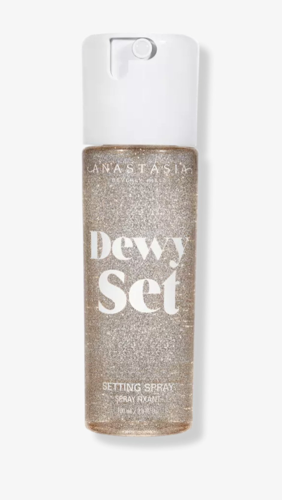
This setting spray was gifted by the gods. Its non-sticky formula leaves you looking dewy while holding your
makeup all night long, emphasis on long.

Morphie is one of my favorite brands when it comes to price and quality. This eyeshadow pallet has the perfect
mix of muted staple colors and a playful array of cool blues. I find myself reaching for this pallet all the
time.
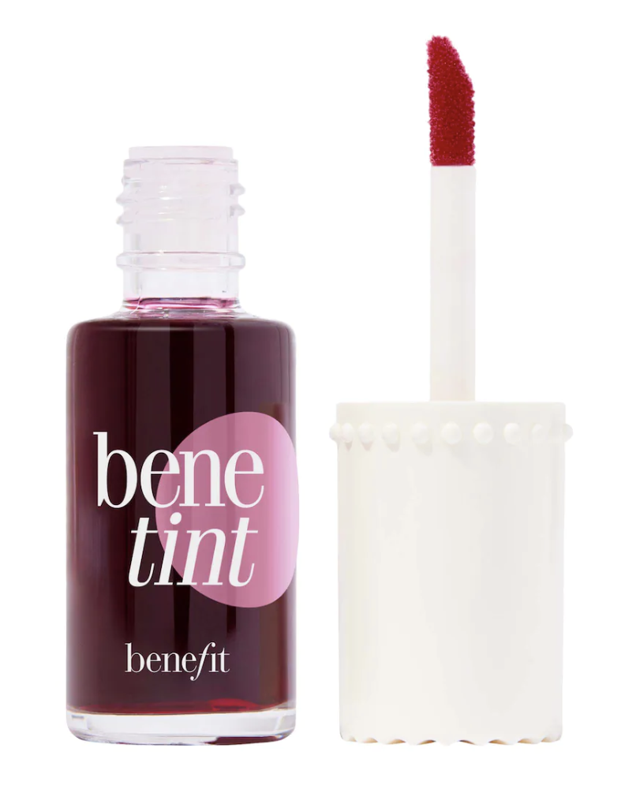
This cheek and lip tint is a must have. I've had this product for years and I still haven't run out despite using it everyday. Swipe some on your cheeks blend to create the perfect natural blush that you can't even tell apart from your skin-that's how lightweight this product is. Did I mention it smells like rose petals?
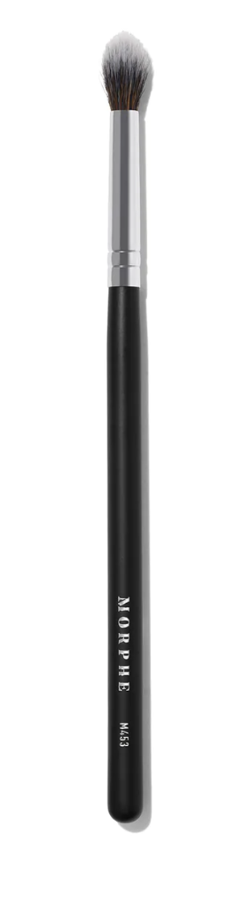
This brush has been my day one. I use it as a blending brush for all over my lid and my crease. For fun, I also use it to lightly dust loose glitter on my lids.
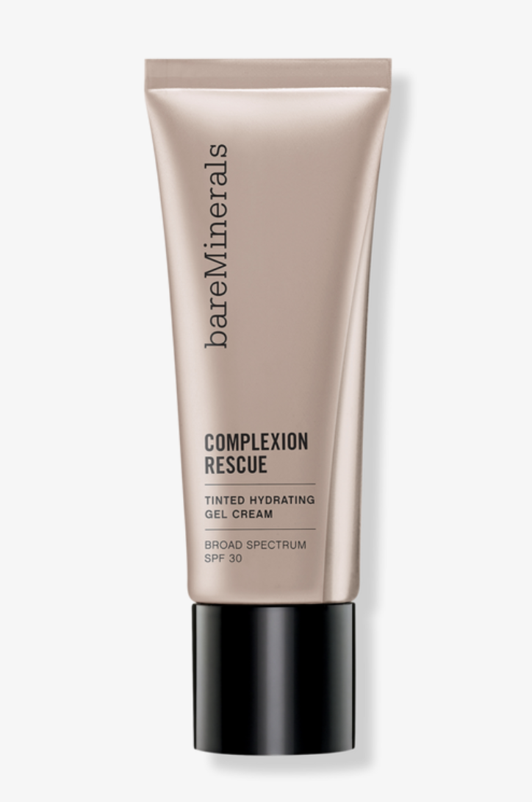
This product trumps all foundations. I put this all over my face as a base and nothing else! I love it because it's so lightweight and gives a barely-there look and feel.
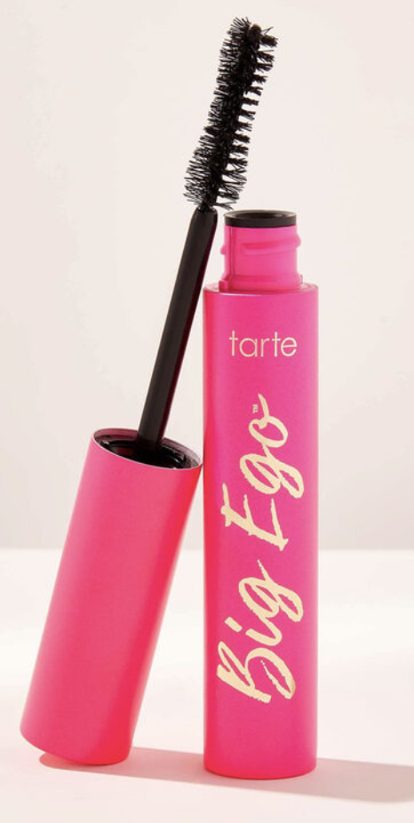
I've always been particular about my mascara and this vegan formula from Tarte is everything I could ever ask for in a mascara. The shape of the applicator lifts your lashes and adds volume without clumping.


 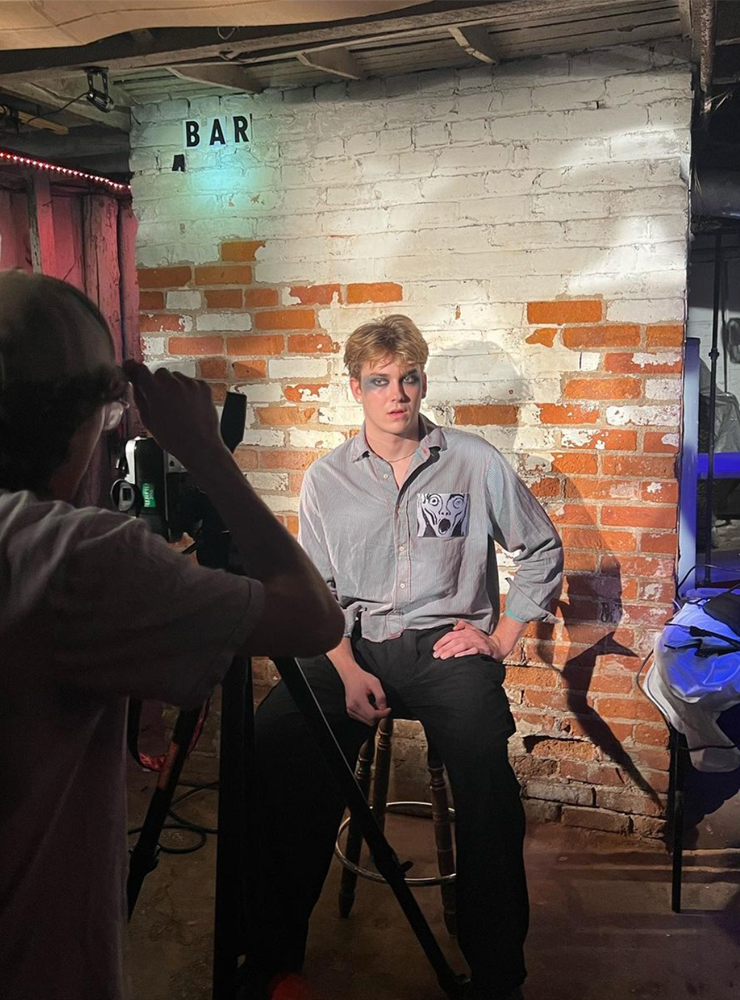
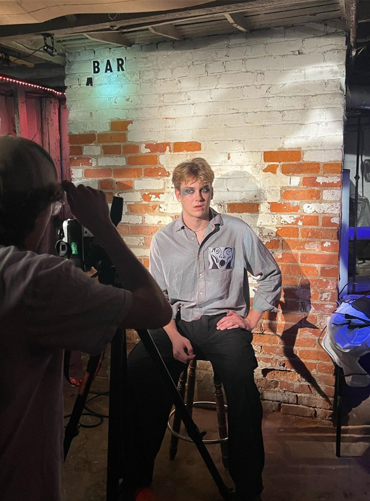


 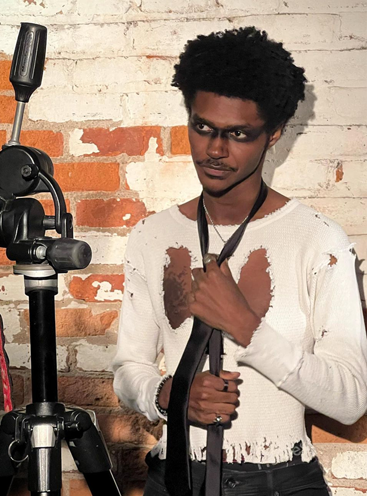
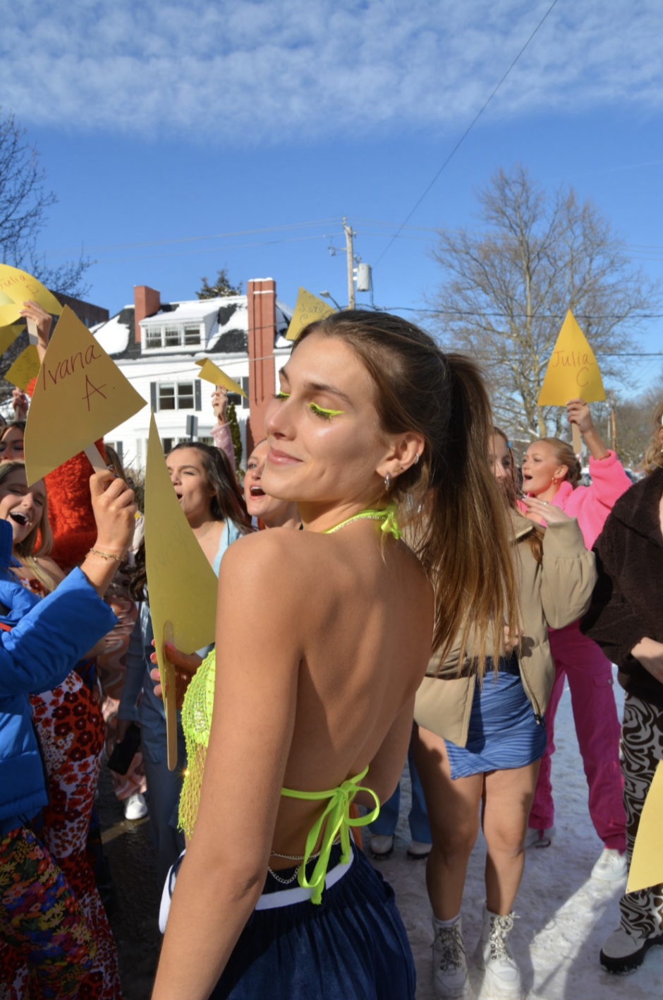
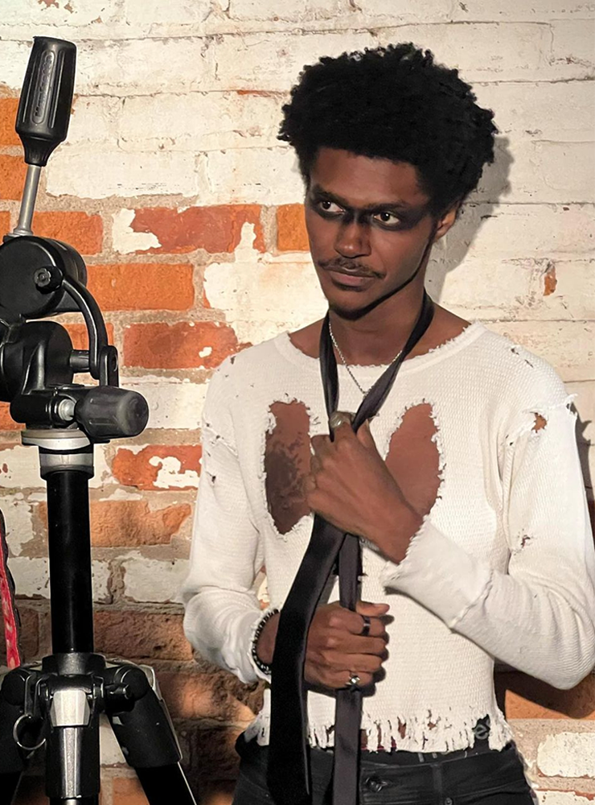
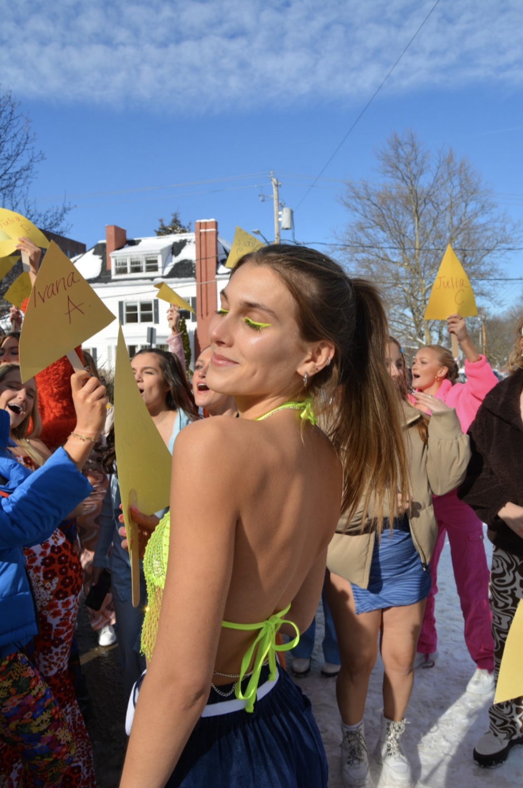